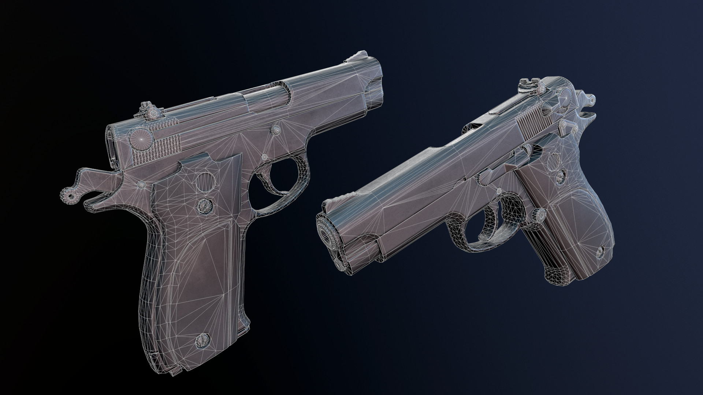
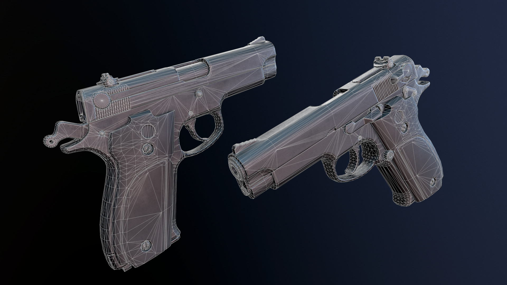

Robertas Sobutas
3D Artist
My first experience working exclusively with Substance Painter, and I have to say that all of my initial bad thoughts about this software are now GONE. It's a great piece of software and I look forward to including it into my workflow!
2048x2048 textures, metalness workflow. Highpoly model by Michael Cecconet. Optimization, unwrap, bakes and textures by me.
Optimization work done in 3DS Max
Unwrapped in UVLayout
Textured in Substance Painter
Baked and presented in Marmoset Toolbag 3
 
